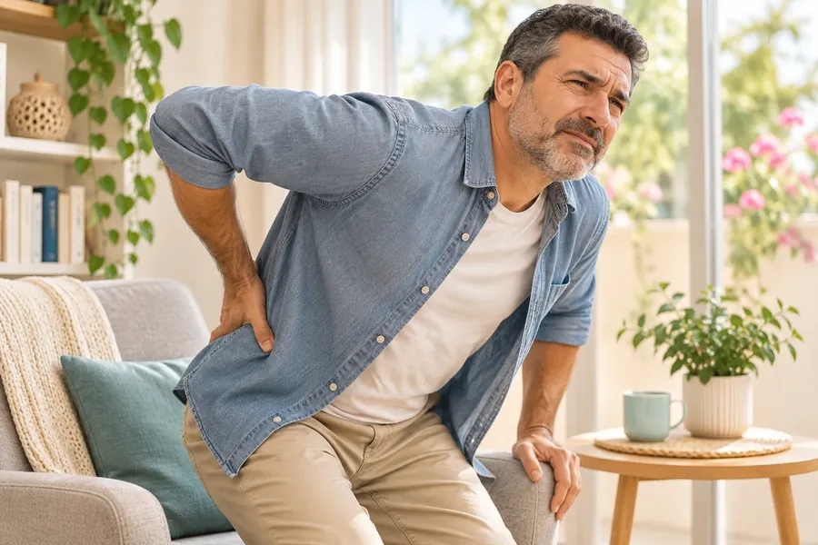
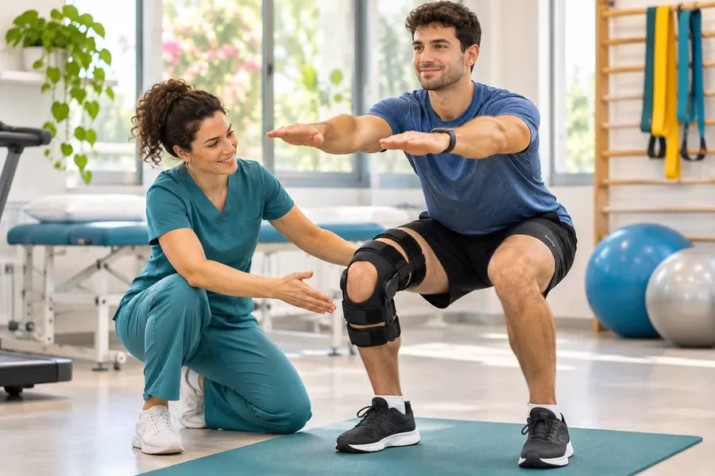
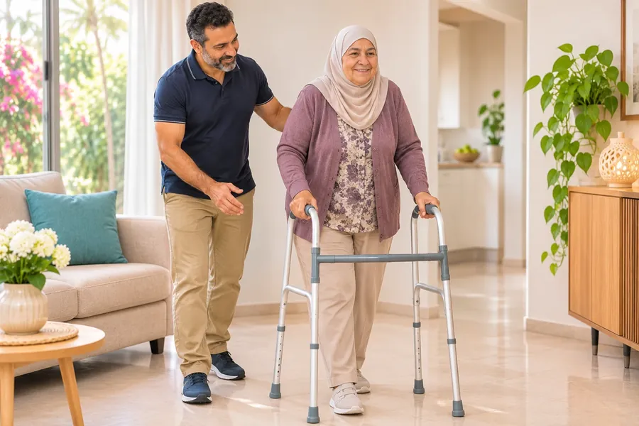

Карта сайта: все страницы и видео
Тазобедренный сустав: головка бедренной кости («шар») и вертлужная впадина таза. Автор: Blausen.com staff (BruceBlaus), CC BY 3.0, источник: Wikimedia Commons; изменения: уменьшено, формат webp; подписи на схеме переведены на русский
Почему не нужно годами оставаться без помощи при боли в суставе
Выберите раздел
Подготовка к операцииТазобедренный суставКоленный сустав

ПозвоночникПереломы
Артроскопия и спортПосле операции
Выписка и домаФотографии — иллюстрации, на них не реальные пациенты.
▶ Видео для пациентов
Все готовые ролики — здесь. Остальные видео в работе.
Подготовка к плановой операции▶ на русскомЗамена тазобедренного сустава передним доступом: что важно после операции▶ на русскомЗамена тазобедренного сустава: после операции, выписка, дома (3 части)▶ на русскомПерелом бедра: срочная операция▶ на русскомЗамена коленного сустава: после операции и дома▶ на русскомЛаминэктомия: что это и как подготовиться▶ на русскомРазделы по темам
Суставы: тазобедренный, коленный, плечевой
Замена тазобедренного суставаПередний доступ: что важно знать после операции▶ видеоЗамена коленного суставаАртроскопия коленаПлечевой сустав — в подготовке
Переломы
Перелом шейки бедраПерелом лодыжкиОперация при переломе: пластины, винты, стержниПерелом плеча у плечевого суставаПерелом запястья (лучевой кости)Позвоночник
КифопластикаЛаминэктомияСпондилодез и дискэктомияДругие операции на позвоночникеПодготовка к операции
Подготовка к операции: голодание, лекарства, душ, документы▶ видеоВидео: подготовка к операцииПосле операции и реабилитация
После операции в отделении и подготовка к выпискеАмпутация ногиРана на стопе при сахарном диабетеМазок на CPE и VRE: зачем его берутЦеллюлит: бактериальное воспаление кожиГнойная инфекция: абсцесс, флегмона и операция по очистке раныСпутанность после операции (делирий)Как не упасть после операцииБоль после операции: обезболиваниеПролежни: как предупредитьДыхательные упражнения после операцииХодунки: как ходить безопасноОтёк ноги после операцииКак вставать после операции на позвоночникеУколы против тромбов дома: эноксапарин (Клексан, Крусия)Тревожные признаки после операции — когда обращаться за медицинской помощью
После операции: тревожные признаки — когда звонить 101 или срочно обращаться за помощьюОбщие темы
Общая темаПочему не нужно годами оставаться без помощи при боли в суставе
Это общая информация. Индивидуальные указания лечащего врача имеют приоритет над рекомендациями на этой странице.
מפת האתר: כל הדפים והסרטונים
מפרק הירך: ראש עצם הירך (״הכדור״) ומכתש האגן. יוצר: Blausen.com staff (BruceBlaus), CC BY 3.0, מקור: Wikimedia Commons; שינויים: הוקטן, פורמט webp; התוויות בתרשים תורגמו לעברית
למה לא כדאי להישאר שנים ללא טיפול בכאב במפרק
בחרו נושא
התמונות להמחשה בלבד ואינן של מטופלים אמיתיים.
▶ סרטונים למטופלים
כל הסרטונים המוכנים נמצאים כאן. סרטונים נוספים בהכנה.
הכנה לניתוח מתוכנן▶ בעבריתהחלפת מפרק ירך: אחרי הניתוח, שחרור, בבית (3 חלקים)▶ בעבריתשבר בירך: ניתוח דחוף▶ בעבריתהחלפת מפרק הברך: אחרי הניתוח ובבית▶ בעבריתנושאים
מפרקים: ירך, ברך, כתף
החלפת מפרק ירךגישה קדמית: מה חשוב לדעת אחרי הניתוחהחלפת מפרק ברךארתרוסקופיה של הברךמפרק הכתף — בהכנה
שברים
שבר בצוואר הירךשבר בקרסולניתוח לקיבוע שבר: פלטות, ברגים ומסמריםשבר בעצם הזרוע ליד מפרק הכתףשבר בשורש כף היד (עצם הרדיוס)עמוד השדרה
קיפופלסטיקהלמינקטומיהאיחוי חוליות וכריתת דיסקניתוחי עמוד שדרה אחריםהכנה לניתוח
הכנה לניתוח: צום, תרופות, מקלחת, מסמכים▶ סרטוןסרטון: הכנה לניתוחאחרי הניתוח ושיקום
אחרי הניתוח במחלקה והכנה לשחרורכריתת רגלפצע בכף הרגל בסוכרתבדיקת משטח ל־CPE ול־VRE: למה לוקחים אותהצלוליטיס: דלקת זיהומית של העורזיהום מוגלתי: מורסה, פלגמון וניתוח לניקוי הפצעבלבול אחרי ניתוח (דליריום)איך לא ליפול אחרי ניתוחכאב אחרי ניתוח: שיכוך כאביםפצעי לחץ: איך למנועתרגילי נשימה אחרי ניתוחהליכון: איך ללכת בבטחהנפיחות ברגל אחרי ניתוחאיך לקום אחרי ניתוח בעמוד השדרהזריקות נגד קרישי דם בבית: אנוקסאפרין (קלקסן, קרוסיה)סימני אזהרה אחרי הניתוח — מתי לפנות לעזרה רפואית
אחרי הניתוח: סימני אזהרה — מתי להתקשר ל־101 או לפנות לעזרה דחופהנושאים כלליים
נושא כללילמה לא כדאי להישאר שנים ללא טיפול בכאב במפרק
זהו מידע כללי. להנחיות האישיות של הרופא המטפל יש עדיפות על ההמלצות בדף זה.
خريطة الموقع: كل الصفحات والفيديوهات
مفصل الورك: رأس عظم الفخذ («الكرة») وحُقّ الحوض. المؤلف: Blausen.com staff (BruceBlaus), CC BY 3.0, المصدر: Wikimedia Commons; التعديلات: تصغير، صيغة webp؛ تُرجمت التسميات في الرسم إلى العربية
لماذا لا ينبغي ترك ألم المفصل من دون علاج لسنوات
اختاروا القسم
التحضير للعمليةمفصل الوركمفصل الركبةالعمود الفقريالكسورالتنظير المفصلي والرياضةبعد العمليةالخروج والعودة للبيت
الصور توضيحية فقط وليست لمرضى حقيقيين.
▶ فيديوهات للمرضى
كل الفيديوهات الجاهزة موجودة هنا. فيديوهات أخرى قيد الإعداد.
التحضير لعملية مخطط لها▶ بالعربيةاستبدال مفصل الورك: بعد العملية، الخروج، في البيت (3 أجزاء)▶ بالعربيةكسر الورك: عملية عاجلة▶ بالعربيةاستبدال مفصل الركبة: بعد العملية وفي البيت▶ بالعربيةالأقسام حسب الموضوع
المفاصل: الورك، الركبة، الكتف
استبدال مفصل الوركالمدخل الأمامي: ما يجب معرفته بعد العمليةاستبدال مفصل الركبةتنظير مفصل الركبةمفصل الكتف — قيد الإعداد
الكسور
كسر عنق الفخذكسر الكاحلجراحة تثبيت الكسور: صفائح وبراغٍ وقضبانكسر عظم العضد قرب مفصل الكتفكسر الرسغ (عظم الكعبرة)العمود الفقري
رأب الحدبةاستئصال الصفيحة الفقريةدمج الفقرات واستئصال القرصعمليات أخرى في العمود الفقريالتحضير للعملية
التحضير للعملية: الصيام، الأدوية، الاستحمام، الوثائق▶ فيديوفيديو: التحضير للعمليةبعد العملية وإعادة التأهيل
بعد العملية في القسم والاستعداد للخروجبتر الساقجرح القدم لدى مرضى السكريمسحة الفحص لـ CPE وVRE: لماذا تُؤخذالتهاب النسيج الخلوي (السيلوليت): عدوى بكتيرية في الجلدالعدوى القيحية: الخرّاج والفلغمون وعملية تنظيف الجرحالتشوّش بعد العملية (الهذيان)كيف تتجنّبون السقوط بعد العمليةالألم بعد العملية: التسكينقرح الفراش: الوقايةتمارين التنفّس بعد العمليةالمشّاية: كيف تمشون بأمانتورّم الساق بعد العمليةالنهوض بعد عملية العمود الفقريحقن الوقاية من الجلطات في البيت: إينوكسابارين (كليكسان، كروسيا)علامات الخطر بعد العملية — متى تطلبون المساعدة الطبية
بعد العملية: علامات الخطر — متى تتصلون بـ 101 أو تطلبون رعاية عاجلةمواضيع عامة
موضوع عاملماذا لا ينبغي ترك ألم المفصل من دون علاج لسنوات
هذه معلومات عامة. تعليمات الطبيب المعالج الخاصة بحالتكم لها الأولوية على التوصيات الواردة في هذه الصفحة.
Site map: all pages and videos
Hip joint: the head of the thigh bone (the "ball") and the hip socket of the pelvis. Author: Blausen.com staff (BruceBlaus), CC BY 3.0, source: Wikimedia Commons; changes: resized, webp format
Why you should not live with joint pain without help for years
Choose a section
Photos are illustrations, not real patients.
▶ Videos for patients
All finished videos are here. More videos are in preparation.
Total hip replacement: after surgery, discharge, at home (3 parts)▶ in EnglishHip fracture: urgent surgery▶ in EnglishKnee replacement: after surgery and at home▶ in EnglishSections by topic
Joints: hip, knee, shoulder
Total hip replacementAnterior approach: what is important to know after surgeryTotal knee replacementKnee arthroscopyShoulder joint — in preparation
Fractures
Hip fractureAnkle fractureFracture surgery: plates, screws and rodsBroken upper arm near the shoulderBroken wrist (radius fracture)Spine
KyphoplastyLaminectomySpinal fusion and discectomyOther spine operationsPreparing for surgery
Preparing for surgery: fasting, medicines, shower, documentsVideo: preparing for surgeryAfter surgery and rehabilitation
After surgery on the ward and getting ready to go homeLeg amputationFoot wound with diabetesCPE and VRE swab: why it is takenCellulitis: a bacterial skin infectionPus-forming infection: abscess, phlegmon and wound-cleaning surgeryConfusion after surgery (delirium)Preventing falls after surgeryPain after surgery: pain reliefPreventing pressure ulcersBreathing exercises after surgeryWalking frame: how to walk safelyLeg swelling after surgeryGetting up after spinal surgeryBlood-clot injections at home: enoxaparin (Clexane, Crusia)Warning signs after surgery — when to seek medical help
After surgery: warning signs — when to call 101 or seek urgent careGeneral topics
General topicWhy you should not live with joint pain without help for years
This is general information. Your treating doctor's individual instructions take priority over the recommendations on this page.